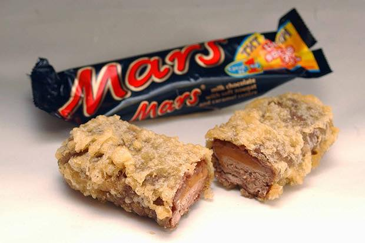

Deep-Fried Mars Bar

How to make a Deep-Fried Mars Bar
The deep-fried Mars bar is a popular Scottish dessert made by coating a Mars chocolate bar in batter
and deep-frying it. Despite its high fat and sugar content, the dish has gained global notoriety for its
unique taste and indulgent nature, sparking discussions about cultural food identity and the need for
balanced eating.
Ingredients:
- 1 Mars chocolate bar
- 1 cup of all-purpose flour
- 1 teaspoon of baking powder
- 1/4 teaspoon of salt
- 1/4 cup of granulated sugar
- 1 egg
- 1 cup of milk
- Vegetable oil (for frying)
Powdered sugar (for dusting) Instructions:
- In a mixing bowl, combine the flour, baking powder, salt, and sugar. Mix them together until
they're evenly blended.
- Add the egg and milk to the dry ingredients and mix them together until the batter is
smooth.
- Heat up the vegetable oil in a deep fryer or a pot until it reaches 375°F (190°C).
- Unwrap the Mars chocolate bar and coat it in the batter. Make sure the bar is fully coated
- Gently place the coated Mars bar into the hot oil using tongs. Fry it for about 2-3 minutes, or
until the batter is crispy and golden brown.
- Use tongs to carefully remove the deep-fried Mars bar from the hot oil and place it on a
paper towel to drain any excess oil.
- Sprinkle powdered sugar over the top of the deep-fried Mars bar.
- Serve the deep-fried Mars bar while it's still warm.
Enjoy!